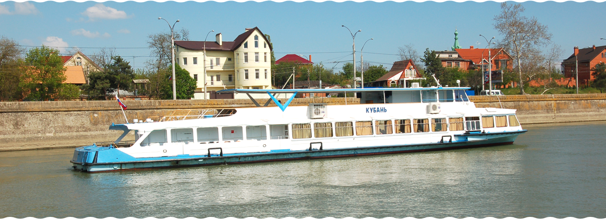
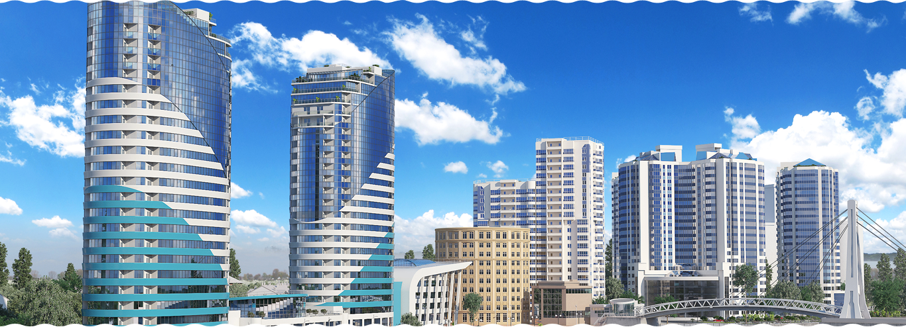

В настоящее время крупное, устойчиво работающее акционерное общество, — лидер транспортной отрасли за последние 4 года.
Сегодня Кубанское речное пароходство осуществляет:
- добычу и поставку нерудных строительных материалов (песка);
- перевозку грузов судами «река-море» плавания;
- пассажирские перевозки;
- судоремонтные работы;
- девелопмент и строительство.
- Пароходство является единственным специализированным предприятием в Краснодарском крае по добыче песка из обводненных месторождений и перевозке его в судах до причалов потребителей.

С 2004 года Кубанское речное пароходство при поддержке администрации г. Краснодара восстановило традиционные, востребованные горожанами пассажирские перевозки по реке Кубань. Услугами пассажирских теплоходов пользуются до 30 тыс.человек за сезон навигации.
С 2004 года Кубанское речное пароходство при поддержке администрации г. Краснодара восстановило традиционные, востребованные горожанами пассажирские перевозки по реке Кубань. Услугами пассажирских теплоходов пользуются до 30 тыс.человек за сезон навигации.

Наиболее значимый инвестиционный проект — комплексная застройка жилого микрорайона в г. Краснодаре, на ул.Кубанская Набережная.
Жилой комплекс «Адмирал» запроектирован строительной компанией Краснодара, как единый архитектурный ансамбль, состоящий из четырех (девять секций) многоэтажных (17–22) жилых домов, ориентированных на реку Кубань, в непосредственной близости к парковой зоне и Кубанской набережной. В жилом комплексе будут размещены 1200 квартир «бизнес-класса» общей площадью свыше 120 тыс. кв. метров, коммерческая недвижимость, паркинги наземного и подземного типа, объекты социальной направленности. Жилые дома обеспечены собственной инфраструктурой и коммуникациями, для эксплуатации которых создается специализированная служба.
Срок строительства жилого комплекса «Адмирал» — 2005–2010 годы. Одновременно реализуется инвестиционный проект строительства магистральной сети теплоснабжения для обеспечения теплом жилой застройки.
В инвестиционную программу Кубанского речного пароходства включено строительство бизнес-центра класса «В» на месте старого речного вокзала на ул. Кубанская Набережная, 39. Здание бизнес-центра площадью 23 тыс.кв. метров сблокировано с гостиницей на 210 мест (12 тыс.кв.метров). Строительство бизнес-центра запланировано на 2007–2009 годы.
Кроме того, Кубанское речное пароходство реализует проект создания морского универсального перегрузочного комплекса в порту Темрюк с годовым грузооборотом 1,9 млн.тонн.